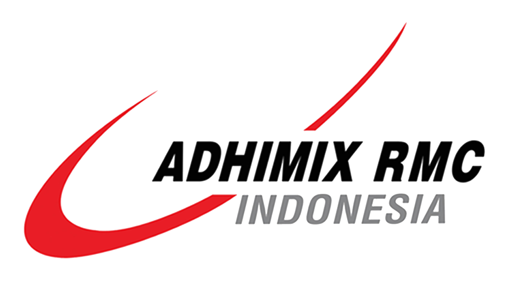
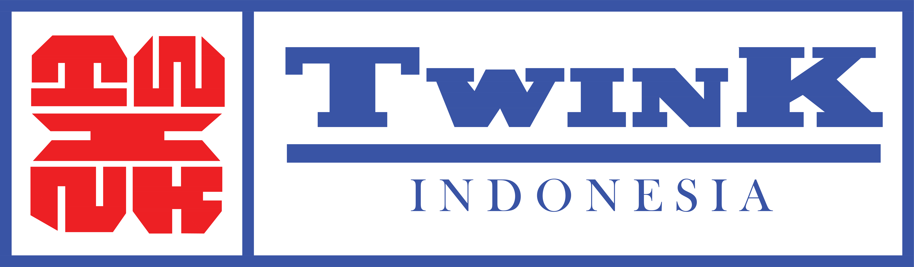
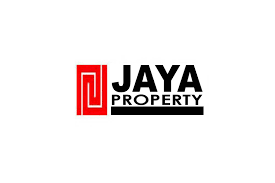
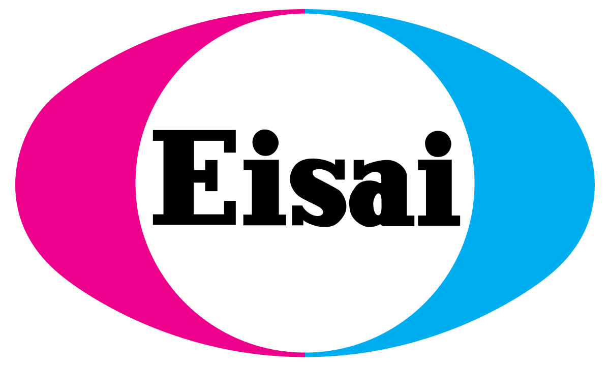
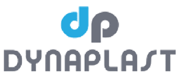

Client





LAYANAN KAMI
PT. Daffamas Karya Semesta adalah perusahaan yang bergerak dibidang jasa sumur bor dalam, yang berfokus pada eksplorasi dan pengeboran sumur air dengan kedalaman yang bervariasi. Menggunakan teknologi canggih dan peralatan terbaru, kami memberikan solusi yang akurat dan efisien untuk mendeteksi dan mengebor sumur air. Tim profesional kami yang terdiri dari ahli pengeboran dan hidrogeologi berpengalaman, memastikan setiap proyek dikerjakan dengan standar tertinggi. Kami menawarkan layanan pengeboran sumur dalam, analisi data, konsultasi teknis, dan pemantauan air seumur secara berkala, memberikan informasi yang komprehensif dan saran yang tepat untuk mendukung pengambilan keputusan pelanggan.
Komitmen kami terhadap kualitas dan inovasi membuat PT. Daffamas Karya Semesta menjadi pilihan utama sebagai vendor jasa sumur bor dalam. Visi kami adalah menjadi pemimpin dalam industri ini, dengan misi menyediakan layanan handal dan efisien untuk mendukung keberlanjutan sumber daya air. Dengan dedikasi yang tinggi, kami siap menjadi mitra terpercaya dalam eksplorasi dan pengelolaan sumur air, memberikan kepuasan dan hasil terbaik bagi setiap pelanggan.
Dengan pengalaman luas dan didedikasi terhadap kualitas, PT. Dafffamas Karya Semesta siap menjadi mitra terpercaya Anda dalam eksplorasi dan pengelolaan sumber air tanah.
Layanan Sondir Boring Test Kami Meliputi :
Kami berkomitmen untuk memberikan layanan terbaik dan pengalaman kemitraan yang memuaskan setiap langkah perjalanan Anda.